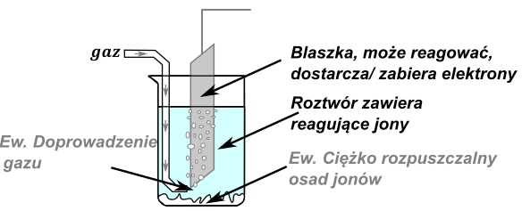
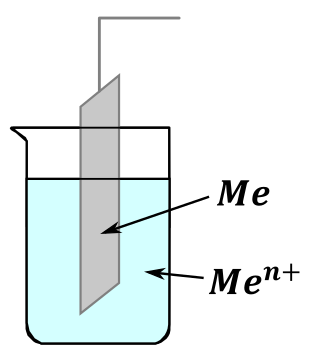
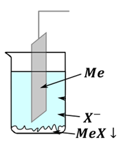
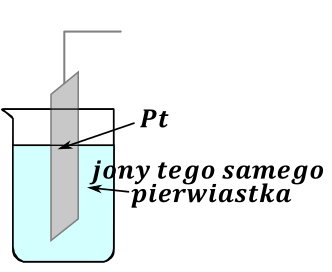
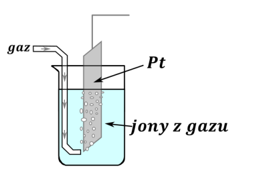
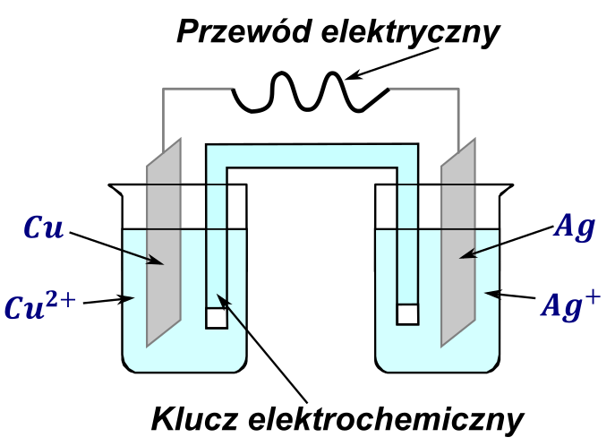
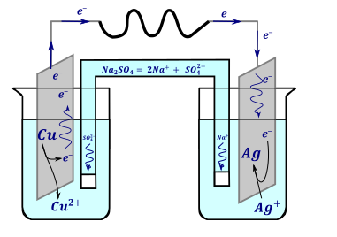
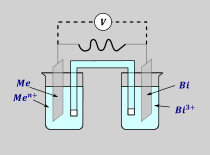

e
e
Ogniwo jest to układ składający się z dwóch półogniw
Półogniwo - to układ, w którym może zachodzić połówkowa reakcja redoks. Typowe półogniwo zbudowane jest z następujących elementów:

Z uwagi na konstrukcję ogniw i reakcje zachodzące na nich możemy wyróżnić następujące rodzaje półogniw:
Najprostszym i najczęściej stosowanym jest półogniwo pierwszego rodzaju . Jest to półogniwo skonstruowane przez zanurzenie danego metalu w jego roztworze:

Może wówczas zachodzić proces opisany półreakcjami:
\[Me^{n +} + ne^{-} \rightleftarrows Me\ \]
Czego przykładem jest
\[Ag^{+} + e^{-} \rightleftarrows Ag\]
Dla metali, które posiadają jony o więcej niż jednym stopniu utlenienia raczej stosujemy jon o niższym stopniu utlenienia, raczej \(Fe^{2 +}\ \) niż \(\ Fe^{3 +}\) ; szczególnie, jeżeli oba są jonami stabilnymi w wodzie. Ewentualnie zawsze możemy udowodnić, który z jonów jest jonem stabilnym w obecności blaszki metalicznej przez porównanie potencjałów i rozpatrzenie reakcji samorzutnej:
\[\ Cr^{3 +} + 3e^{-} \rightarrow Cr\ E = - 0.744 \rightarrow\]
\[Cr^{2 +} + 2e^{-} \rightarrow Cr\ \ \ E = - 0.913 \leftarrow \ \]
\[2Cr^{3 +} + 6e^{-} \rightarrow 2Cr\]
\[3Cr \rightarrow 3Cr^{2 +} + 6e^{-}\]
I sumarycznie:
\[2Cr^{3 +} + \ Cr \rightarrow 3Cr^{2 +}\]
Przez zapis reakcji samorzutnej dowiedliśmy, że kontakt jonów chromu (III) i chromu - metalu daje chrom (II)
Drugim rodzajem półogniwa jest półogniwo strąceniowe . Jest ono zbudowane z blaszki metalicznej zanurzonej w roztworze anionów strącających ciężko rozpuszczalną sól lub wodorotlenek tego metalu, co możemy przedstawić na schemacie:

Podczas pracy tego półogniwa zachodzi półreakcja: \(MeX + e^{-} \rightleftarrows Me + X^{-}\) . Przykładem takiego półogniwa jest półogniwo chloroołowiane – jest to blaszka ołowiana zanurzona w roztworze zawierającym chlorki, na dnie natomiast znajduje się ciężko rozpuszczalna sól ołowiu – \(PbCl_{2}\) . Zachodzić wówczas może proces:
\[PbCl_{2} + 2e^{-} \rightleftarrows Pb + 2Cl^{-}\]
Spotyka się w akumulatorze kwasowo ołowiowym półogniwo strąceniowe, w którym zamiast metalu jest użyty tlenek metalu \(PbO_{2}\)
\[PbO_{2} + 4H^{+} + SO_{4}^{2 -} \rightleftarrows PbSO_{4} + 2H_{2}O\]
Zresztą drugie półogniwo w tym akumulatorze również jest tego rodzaju
\[PbSO_{4} + 2e^{-} \rightleftarrows Pb + SO_{4}^{2 -}\]
Trzecim rodzajem półogniw jest półogniwo, które możemy nazwać jonowym . Skonstruowane jest ono przez zanurzenie blaszki w roztworze zawierającym jony pierwastkia na różnym stopniu utlenienia. Możeliwa jest wówczas półreakcja związana ze zmianą stopnia utleniania tych jonów. Blaszka metaliczna w tym wypadku spełnia tylko rolę elektrody – doprowadza i odbiera elektrony, natomiast nie uczesticzy w reakcji elektrodowej. Jako blaszki najczęściej używa się platyny z uwagi na jej małą reaktywność albo elektrod grafitowych z uwagi na ich względnie małą reaktywność i bardzo niską cenę. Budowa takiego ogniwa wygląda następująco:

Przykładem półreakcji zachodzącej an takim pół
\[MnO_{4}^{-} + 8H^{+} + 5e^{-} \rightleftarrows Mn^{2 +} + 4H_{2}O\]
Blaszka platynowa (albo grafitową) ona tylko dostarcza elektrony albo je odbiera, sama nie reaguje.
Kolejnym rodzajem półogniwa jest półogniwo gazowe – zbudowane ono jest przez zanurzenie elektrody w roztworze zawierającym jony, które powstają na skutek reakcji elektrodowej z doprowadzonego rurką gazu. Również w tym wypadku elektroda jedynie dostarcza i odbiera elektrony, a więc bardzo często stosuje się blaszki platynowe lub grafitowe. Ogólny schemat tegoż półogniwa wygląda następująco:

Przykładami półreakcji dla tego typu ogniwa –dla półogniwo wodorowe (kwasowe lub zasadowe):
\[H_{2} \rightleftarrows 2H^{+} + 2e^{-}\]
\[H_{2} + 2OH^{-} \rightleftarrows 2H_{2}O + 2e^{-}\]
Dla półogniwa chlorowego:
\[Cl_{2} + 2e^{-} \rightleftarrows 2Cl^{-}\]
Aby mieć ogniwo, a tym samym przepływ prądu elektrycznego i reakcje musimy złożyć dwa półogniwa razem w ogniwo. Wymaga to połączenia blaszek (elektrod obu półogniw) kablem (z opornikiem), natomiast roztwory łączymy tzw. Kluczem elektrolitycznym, co umożliwia przepływ jonów i tym samym wyrównywanie się ładunku między roztworami. W przypadku, w którym jony z sobą nie przereagują możemy po prostu zastosować wspólny roztwór dla obu półogniw.

Zauważ, że kierunek reakcji samorzutnej możemy przewidzieć porównując potencjały reakcji, które mogą zachodzić na półogniwach , których zbudowane jest ogniwo.
\[Cu^{2 +} + 2e^{-} \rightleftarrows Cu\ \ \ E = 0.342V \leftarrow\]
\[Ag^{+} + e^{-} \rightleftarrows Ag\ \ \ \ E = 0.800V \rightarrow\]
Kierunek reakcji obu półreakcji będzie
\[Cu \rightarrow Cu^{2 +} + 2e^{-}\]
\[Ag^{+} + e^{-} \rightarrow Ag\ \]
Po zsumowaniu dostajemy reakcję samorzutną:
\[2Ag^{+} + Cu \rightarrow Cu^{2 +} + 2Ag\]
Z półreakcji wynika, że na blaszce miedzianej powstają elektrony, a na blaszce srebrnej są zużywane, a więc te elektrony muszą się przemieścić z jednej blaszki na drugą.
Te elektrony nie mogą się przemieścić „magicznie” czy przeteleportować z jednej blaszki na drugą. W tym celu blaszki łączymy przewodem (drutem metalicznym) – jest on dobrym przewodnikiem elektronów, a więc umożliwia ich transport. Jak dobrze wiemy, elektrony obdarzone są ładunkiem ujemnym, a więc podczas przepływ elektronów znaczy, że mamy przepływ prądu elektrycznego. W takim razie w działającym, połączonym ogniwie mamy przepływ elektronów = przepływ prądu po przewodzie elektrycznym.
Jednocześnie przypominam, że prąd płynie w drugą stronę niż elektrony czyli tutaj w tym wypadku elektrony z płyną z Cu do Ag, a prąd z Ag do Cu

A na cholerę w takim razie klucz?
Klucz to w najprostszym wykonaniu kawał zagiętej rurki szklanej, o kształcie takim, żeby można było go wypełnić stężonym roztworem soli dobrze rozpuszczalnej. Użyta sól nie może reagować z jonami w obu komorach półogniw. Dodatkowo po napełnieniu elektrolitu odpowiednią solą umieszczamy Zatkany watką z obu stron, aby uniknąć wymieszania się roztworów w komorze i w kluczu elektrolitycznym.
Rozpatrzmy lewe półogniwo. Zachodzi w nim roztwarzanie Cu do jonów \(Cu^{2 +}\)
Teoretycznie znaczy tyle, że robi w roztworze w lewej elektrodzie się nadmiar ładunku dodatniego gdyż z obojętniej miedzi robią się jej kationy, a natomiast elektrony tego ładunku nie równoważą, bo przepływają przewodem, a nie roztworem. Konieczność wyrównania ładunku w roztworach obu półogniw wymusza na nas połączenie ich kluczem elektrochemicznym. W tym wypadku roztwór elektrody, na której zachodzi proces utlenienia – katoda w tym wypadku lewe półogniwo, roztwór, w której jest miedź, wyciąga sobie jony ujemne z klucza wyrównując ładunek w roztworze.
I analogicznie prawy roztwór dobiera sobie jony dodatnie, gdyż w nim zaczyna brakować ładunku dodatniego na skutek zachodzącego procesu osadzania jonów srebra na blaszce srebrnej. Sumarycznie przez dobór odpowiednich jonów następuje wyrównanie ładunku w obu komorach elektrolitycznych, jak również sumaryczny ładunek w kluczu w trakcie procesu jest obojętny, gdyż jeden roztwór wyciągał jony dodatnie, a drugie ujemne.
Jeżeli masz dwa półogniwa niepołączone kluczem (i oczywiście nie jest to jeden roztwór) to reakcja nie zachodzi, tak samo jakbyśmy nie mieli przewodu łączącego blaszki. Sumarycznie przewód jest przewodnikiem elektronów, natomiast klucz elektrochemiczny jest przewodnikiem jonowym. Aby reakcja elektrochemiczna zachodziła musi mieć oba przewodniki, oba połączenia.
Zauważmy, że półreakcja/ półogniwo, która ma wyższy potencjał zawsze zachodziła w stronę redukcji (będzie zachodzić w prawo), natomiast druga półreakcja, o niższym potencjale, będzie półreakcją utlenienia (biegła w lewo), co jest zgodne z samorzutnością reakcji:
\[Cu^{2 +} + 2e^{-} \rightleftarrows Cu\ \ \ E = 0.342V \leftarrow\]
\[Ag^{+} + e^{-} \rightleftarrows Ag\ \ \ \ E = 0.800V \rightarrow\]
Tutaj możemy wprowadzić dwie ważne nazwy:
KATODA - półogniwo lub blaszka, w której zachodzi reakcja REDUKCJI czyli w ogniwie – układzie gdzie zachodzi proces samorzutny jest to półogniwo o wyższym potencjale. W analizowanym przypadku to półogniwo srebrowe: \(Ag^{+} + e^{-} \rightarrow Ag\) . Katoda z uwagi na konieczność redukcji musi mieć wyższy potencjał. W półreakcji redukcji elektrony są substratem, a więc zużywamy je w trakcie procesu. Powoduje to ich stały deficyt na tej elektrodzie, a więc ładunek tej blaszki jest dodatni.
ANODA - półogniwo lub blaszka, w której zachodzi reakcja UTLENIENIA czyli w ogniwie – układzie gdzie zachodzi proces samorzutny jest to półogniwo o wyższym potencjale. W analizowanym przypadku to półogniwo miedziowe: \(Cu \rightarrow Cu^{2 +} + 2e^{-}\) . Anoda z uwagi na konieczność półreakcji utleniania musi mieć niższy potencjał. W półreakcji utleniania elektrony są produktem, a więc powstają one w trakcie procesu. Powoduje to ich nadmiar deficyt na tej elektrodzie, a więc ładunek tej ujemny jest dodatni.
ZEBY SIĘ NIE POMYLIŁO NAUCZ SIĘ JEDNEGO, a drugie będziesz mieć przez eliminację.
RedCat – REDuKAcja zachodzi na Katodzie, metoda czerwonego kota.
e
Potencjały danego półukładu redoks znajdują się w tablicach lub w treści zadania. Należy sobie zdawać sprawę, że JEST TO PRZYBLIŻENIE, W I MÓWI O TYM RÓWNANIE NERNSTA, KTÓREGO NIE MA W PODSTAWIE PROGRAMOWEJ, ALE CZĘSTO JEST Z INFORMACJĄ WSTĘPNĄ. Czyli jak nie powiedzą o równaniu Nernsta to nie używamy go, natomiast, jeżeli powiedzą to używamy i udajemy zaskoczonych.
Ogólnie z fizyki wiemy, że różnica potencjałów jest napięciem układu. I w przypadku ogniw jest dokładnie tak samo – napięcie danego ogniwa to różnica potencjałów pomiędzy elektrodami .
Obliczając różnicę potencjałów pomiędzy katodą i anodą uzyskujemy wartość \(\mathbf{SEM}\) .
\[SEM = E_{K} - E_{A}\]
Jest to siła elektromotoryczna roztworu, inaczej jest to teoretyczne napięcie, jakie dostawalibyśmy jakbyśmy nie mieli żadnych strat związanych z oporami. Oczywiście rzeczywiste napięcie uzyskane na ogniwie będzie mniejsze – straty zawsze powodują spadek napięcia.
Rzeczywiste napięcie oznaczamy jako \(U\) - jest to napięcie zmierzone, wskazywane podczas pomiaru, na potrzeby matury można powiedzieć, że wartość ta będzie wynosiła około SEM (w praktyce będzie mniejsza).
\[U \approx SEM = E_{K} - E_{A}\]
Jeżeli nie mamy w informacji wstępnej podanego równania Nernsta to potencjał danej elektrody równy jest potencjałowi standardowemu, a więc sumarycznie, na potrzeby matury można powiedzieć, że napięcie ogniwa (lub SEM) to różnica potencjałów standardowych:
\[U \approx SEM = E_{K} - E_{A} \approx \mathbf{E}_{\mathbf{K}}^{\mathbf{0}}\mathbf{-}\mathbf{E}_{\mathbf{A}}^{\mathbf{0}}\]
W przypadku analizowanego ogniwa możemy obliczyć wartość \(SEM\) jako:
\[SEM\ \approx E_{K}^{0} - E_{A}^{0} = E_{Ag}^{0} - E_{Cu}^{0} = 0.8 - 0.342 = 0.458V\]
Wartość ta stanowi około wartość obserwowaną przez pomiar napięcia przy użyciu miernika elektrycznego (woltomierz).
W zadaniach maturalnych przewija się następujący typ: znamy SEM ogniwa, znamy jedno półogniwo i masz ustalić, jakie jest drugie półogniwo.

Siłą elektromotoryczna tego ogniwa w warunkach standardowych była równa 0.565V. Napisz w formie jonowej skróconej sumaryczne równanie reakcji, która zachodzi w pracującym ogniwie. Napisz schemat tego ogniwa.
Znamy jedno z półogniw, jesteśmy w stanie odnaleźć jego potencjał w tablicach CKE. Problemem jest to, że nie wiem czy to półogniwo jest katodą czy anodą. Rozwiązaniem tego problemu jest rozważenia dwóch wariantów (bizmut raz jako katoda, a raz jako anoda). Umożliwia to obliczenie potencjału standardowego drugiego półogniwa i sprawdzenie w tablicach maturalnych czy półogniwo o takim potencjale w ogóle istnieje. Odczytanie wartości potencjału bizmutu daje:
\[E_{Bi}^{0} = 0.308\]
Rozważając pierwszy wariant: zakładam, że bizmut jest katodą:
\[SEM = E_{K} - E_{A}\]
\[0.565 = 0.308 - E_{A}\]
\[E_{A} = - 0.257\]
Kolejno szukam metalu, który ma taki potencjał. Po sprawdzeniu w tablicach widzę, że to jest nikiel
Znając półreakcje mogę ustalić reakcję samorzutną przebiegającą w ogniwie:
\[Bi^{3 +} + 3e^{-} \rightarrow Bi\ \ \ \ \ \ E^{0} = 0.308\ \ \ \ \ \ \ \ \rightarrow\]
\[Ni^{2 +} + 2e^{-} \rightarrow Ni\ \ \ \ E^{- 0} = - 0.257\ \ \ \ \leftarrow\]
W związku pierwszą półreakcję przepisuje jak jest, bo ma większy potencjał, natomiast odwracam kierunek drugiej półreakcji. Po wymnożeniu tak, aby elektrony się skróciły i zsumowaniu półreakcji dostaję reakcję całkowitą:
\[2Bi^{3 +} + 3Ni \rightarrow 3Ni^{2 +} + 2Bi\]
Rozważając drugi wariant, dostanę wartość potencjału katody
\[SEM = E_{K} - E_{A}\]
\[0.565 = E_{K} - 0.308\]
\[E_{K} = 0.873\]
Natomiast półogniwa o takim potencjale standardowym nie ma w tablicach CKE, ani tym bardziej w treści zadania, a więc nie jest to ten wariant.